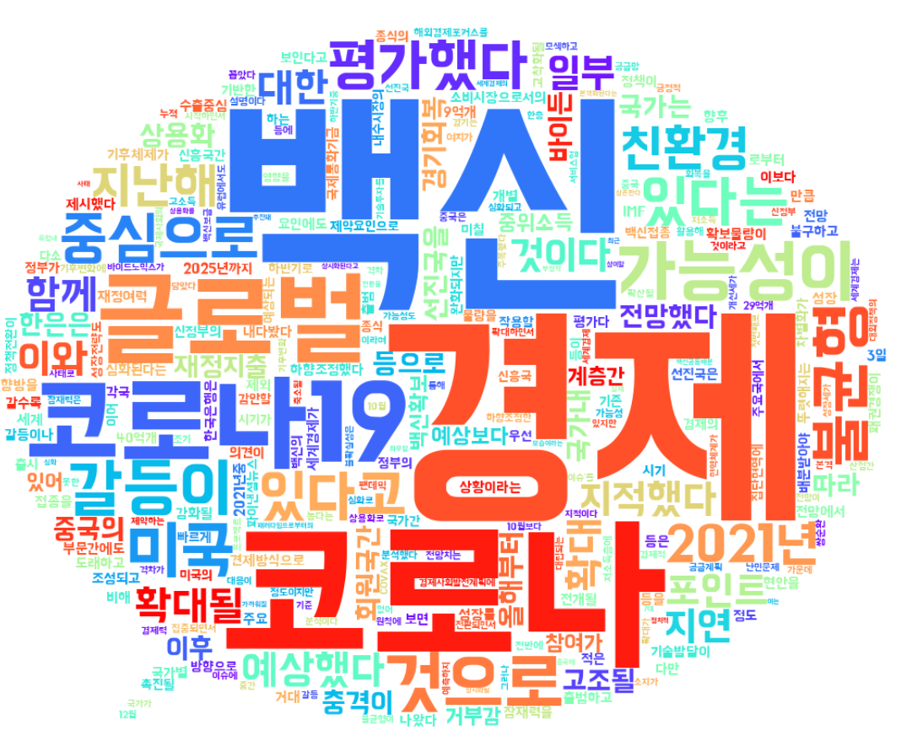

A tag cloud (word cloud or wordle or weighted list in visual design) is a novelty visual representation of text data, typically used to depict keyword metadata (tags) on websites, or to visualize free form text.
Tags are usually single words, and the importance of each tag is shown with font size or color. This format is useful for quickly perceiving the most prominent terms to determine its relative prominence.
| 백신 | 11 | |
| 경제 | 11 | |
| 코로나 | 9 |